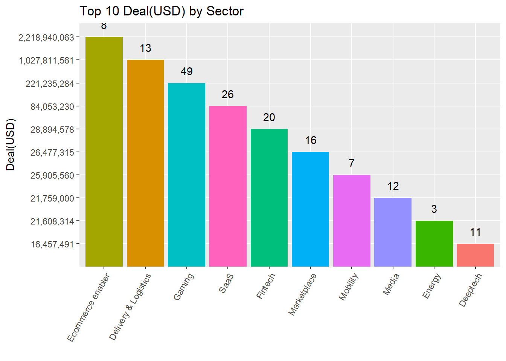
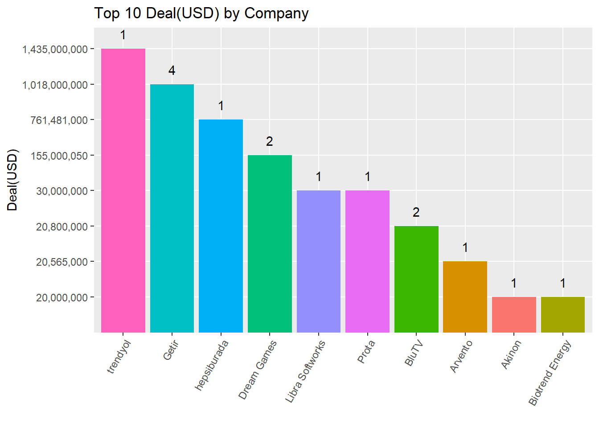
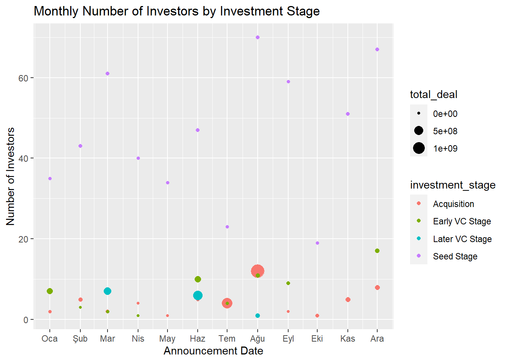

library(dplyr)
library(readxl)
library(lubridate)
library(tidyr)
library(ggplot2)
library(stringi)
library(hrbrthemes)
library(viridis)
library(scales)
library(knitr)
options(dplyr.summarise.inform = FALSE)1 Startup Deals
DATA WRANGLING
Before starting EDA, it will be better to prepare the data. We will convert related data to appropriate data types. If we have proper data types, then we can easily use libraries and functions to manipulate the data.
Loading libraries:
Reading xls file:
deals<-read_excel("docs/startup_deals_2021.xlsx")Let’s change the column names and look at the summary.
new_cols <- c("ID","target_company","sector","investor","announcement_date","financial_investor"
,"investor_origin","stake","deal_value","investment_stage")
colnames(deals) <- new_colsChanging the class of “Announcement Data” column from character to date. Use built-in function -> “my” function from lubridate library.
deals$announcement_date<-my(deals$announcement_date)Changing the class of “Stake (%)” from character to numeric. First erasing “%” character, dividing by 100 and then converting the numeric.
deals$stake<-as.numeric(sub("%","",deals$stake))Changing the class of “Deal Value (USD)” from character to numeric.
deals$deal_value<-as.numeric(deals$deal_value)Let’s fix the wrong values in column ‘Sector’.
deals$sector[deals$sector == 'Telecpm'] <- 'Telecom'
deals$sector[deals$sector == 'Cybersec urity'] <- 'Cybersecurity'
deals$sector[deals$sector == 'B lockchain'] <- 'Blockchain'
deals$sector[deals$sector == 'Artificial intelligence'] <- 'Artificial Intelligence'
deals$sector[deals$sector == 'Diğital Comparison'] <- 'Digital Comparison'
deals$sector[deals$sector == 'I mage process'] <- 'Image process'Let’s add count values to comma separated values, investor_origin and investor.
deals$org_count <- lengths(strsplit(deals$investor_origin, ","))
deals$inv_count <- lengths(strsplit(deals$investor, ","))deals <- deals %>% mutate(deal_value = ifelse(is.na(deal_value), 0, deal_value))Let’s look at the final types of all columns:
glimpse(deals)Rows: 297
Columns: 12
$ ID <dbl> 1, 2, 3, 4, 5, 6, 7, 8, 9, 10, 11, 12, 13, 14, 15, …
$ target_company <chr> "Abonesepeti", "Abrakadabra", "Ace Games", "Adlema"…
$ sector <chr> "SaaS", "Gaming", "Gaming", "Internet of things", "…
$ investor <chr> "Keiretsu Forum, Berkan Burla", "WePlay Ventures", …
$ announcement_date <date> 2021-06-01, 2021-12-01, 2021-04-01, 2021-06-01, 20…
$ financial_investor <chr> "Yes", "Yes", "Yes", "Yes", "Yes", "Yes", "Yes", "Y…
$ investor_origin <chr> "Turkey", "Turkey", "Turkey, USA", "Turkey", "Turke…
$ stake <dbl> 5.00, 5.00, NA, NA, NA, NA, 10.92, NA, NA, 15.38, N…
$ deal_value <dbl> 100000, 250000, 0, 120000, 100000, 1000000, 250000,…
$ investment_stage <chr> "Seed Stage", "Seed Stage", "Seed Stage", "Seed Sta…
$ org_count <int> 1, 1, 2, 1, 1, 1, 2, 1, 1, 3, 1, 1, 1, 1, 2, 1, 1, …
$ inv_count <int> 2, 1, 5, 1, 2, 1, 4, 1, 1, 4, 5, 1, 1, 1, 2, 1, 1, …Dataframes namely “origins” and “investors” are created in order to separate collapsed columns into multiple rows.
origins <- deals %>% select(ID, investor_origin)origins <- separate_rows(origins, investor_origin, sep = ", ")investors <- deals %>% select(ID, investor)investors <- separate_rows(investors, investor, sep = ", ")EDA (Exploratory Data Analysis)
The chart gives information about how much dollars was invested on start-ups in 2011.
From the pie chart it is clear that the majority of investments are made at acquisition stage with 64%. Later VC Stage, Early VC Stage and Seed Stage follows the first one with 24%, 10% and 2% respectively.
df0 <- deals %>%
group_by(investment_stage) %>%
summarise(count = n(), total_deal = sum(deal_value)) %>%
mutate(deal_perc = scales::percent(round(total_deal / sum(total_deal), 2)))df0 %>%
ggplot(aes(x = "", y = deal_perc, fill= investment_stage)) +
geom_bar(stat="identity", width=1) +
geom_text(aes(label = deal_perc),
position = position_stack(vjust = 0.5)) +
coord_polar("y", start=0) +
labs(title = "Total Deal(USD) by Investment Stage") +
xlab("") +
ylab("")The graph illustrates monthly trends by investment stage. There has been a sharp increase in investments at acquisition stage on August. Investments at Later VC Stage started to grow after March, peaked on June, the downturn began after June. Seed Stage investments have been on the same level over the year. Early VC Stage investments have peaked on June like Later VC Stage investments.
df1 <- deals %>% group_by(announcement_date, investment_stage) %>%
summarise(total_deal = sum(deal_value))df1 %>%
ggplot( aes(x=announcement_date, y=total_deal)) +
geom_line( aes(color=investment_stage), color="#69b3a2", size=1.2 )+
scale_color_viridis(discrete = TRUE) +
theme(
legend.position="none",
plot.title = element_text(size=14),
panel.grid = element_blank()
) +
scale_x_date(date_breaks="1 month", date_labels="%b") +
theme(axis.text.x = element_text(angle=60,vjust=1,hjust=1)) +
labs(title = "Monthly Deal(USD) by Investment Stage") +
xlab("Announcement Date") +
ylab("Deal(USD)") +
facet_wrap(~investment_stage)The pivot table shows the detailed version of the graph below.
df1 %>%
pivot_wider(names_from = investment_stage, values_from = total_deal, values_fill = 0)# A tibble: 12 × 5
# Groups: announcement_date [12]
announcement_date Acquisition `Early VC Stage` `Seed Stage` `Later VC Stage`
<date> <dbl> <dbl> <dbl> <dbl>
1 2021-01-01 3795461 128000000 3644220 0
2 2021-02-01 23507000 50 9646893 0
3 2021-03-01 14200000 2295571 7891111 300000000
4 2021-04-01 770331 0 3446473 0
5 2021-05-01 0 0 6645833 0
6 2021-06-01 4000000 160227346 7676675 555000000
7 2021-07-01 767231000 2775796 4553192 0
8 2021-08-01 1496750000 24052936. 12342500 35000000
9 2021-09-01 1000000 14500000 6549644 0
10 2021-10-01 10000000 0 6278078 0
11 2021-11-01 47000000 0 9482056 0
12 2021-12-01 61905000 36200000 12385295 0The below chart shows the total investment values for the top 10 sectors and the number of investments at different times.
deals %>%
filter(deal_value != 0) %>%
group_by(sector) %>%
dplyr::summarise(nb_of_investment = n(), total_deal_value = sum(deal_value)) %>%
arrange(desc(total_deal_value)) %>%
top_n(10) %>%
ggplot(aes(fill = sector, y = format(total_deal_value, scientific = FALSE, big.mark = ",") , x = reorder(sector, -total_deal_value)) ) +
geom_bar(position="stack", stat = "identity", show.legend = FALSE) +
theme(axis.text.x = element_text(angle=60,vjust=1,hjust=1)) +
labs(title = "Top 10 Deal(USD) by Sector") +
xlab("") +
ylab("Deal(USD)") +
geom_text(aes(label = nb_of_investment), vjust = - 1)
The chart gives information about how much investment has been made on sectors. Early VC Stage investments have been distributed over many sectors while Later VC Stage investments have been dominated in Delivery&Logistics sector.
df2 <- deals %>% filter(investment_stage != "Acquisition") %>%
group_by(investment_stage, sector) %>%
summarise(total_deal = sum(deal_value)) %>%
ungroup() %>%
top_n(20, total_deal) %>%
arrange(desc(total_deal))df2 %>% ggplot(aes(x = reorder(sector, -total_deal), y = total_deal, fill = investment_stage)) +
geom_bar(stat = "identity") +
theme(axis.text.x = element_text(angle=60,vjust=1,hjust=1)) +
labs(title = "Deal(USD) by Sector & Investment Stage") +
xlab("") +
ylab("Deal(USD)")Getir has reached the largest deal volume from a variety of investors. Dream Games and Akinon attracted the most investments by deal volume respectively.
df8 <- deals %>% filter(investment_stage != "Acquisition") %>%
group_by(target_company, sector) %>%
summarise(total_deal = sum(deal_value), total_inv_count = sum(inv_count)) %>%
ungroup() %>%
top_n(10, total_deal) %>%
arrange(desc(total_deal)) %>%
mutate(total_deal=format(total_deal, scientific = FALSE, big.mark = ","))
knitr::kable(df8, format.args = list(big.mark = ",",scientific = FALSE))| target_company | sector | total_deal | total_inv_count |
|---|---|---|---|
| Getir | Delivery & Logistics | 1,018,000,000 | 21 |
| Dream Games | Gaming | 155,000,050 | 8 |
| Akinon | Ecommerce enabler | 20,000,000 | 4 |
| Servislet | Marketplace | 12,500,000 | 3 |
| Colendi | Fintech | 12,000,000 | 1 |
| RS Research | Deeptech | 12,000,000 | 3 |
| Tarfin | Agritech | 8,000,000 | 5 |
| hadi | Gaming | 5,200,000 | 2 |
| Yolda.com | Delivery & Logistics | 5,000,000 | 6 |
| Brew Games | Gaming | 4,000,000 | 1 |
This chart shows the top 10 companies with the highest investment value in 2021 and the number of investments at different times. Explicitly seen that the top 3 companies that received the most investment is online marketing.
deals %>%
filter(deal_value != 0) %>%
group_by(target_company) %>%
dplyr::summarise(nb_of_investment = n(), total_deal_value = sum(deal_value)) %>%
arrange(desc(total_deal_value)) %>%
top_n(10) %>%
ggplot(aes(fill = target_company, y = format(total_deal_value, scientific = FALSE, big.mark = ",") , x = reorder(target_company, -total_deal_value)) ) +
geom_bar(position="stack", stat = "identity", show.legend = FALSE) +
theme(axis.text.x = element_text(angle=60,vjust=1,hjust=1)) +
labs(title = "Top 10 Deal(USD) by Company") +
xlab("") +
ylab("Deal(USD)") +
geom_text(aes(label = nb_of_investment), vjust = - 1)
The below table analyzes which sectors received investment from different investors in 2021. Regardless of the total investment value, investors are attracted by the gaming sector. (Analyzes were made for unique investors.)
df_investor_by_sector = deals %>%
select(ID, target_company, sector) %>%
full_join(investors, by = "ID") %>%
group_by(sector) %>%
dplyr::summarise(nb_of_investors = n_distinct(investor)) %>%
arrange(desc(nb_of_investors))
df_dealvalue_by_sector = deals %>%
group_by(sector) %>%
dplyr::summarise(total_deal_value = sum(deal_value)) %>%
arrange(desc(total_deal_value))
df_join <- inner_join(df_investor_by_sector, df_dealvalue_by_sector, by="sector") %>%
mutate(total_deal_value = format(total_deal_value, scientific = FALSE, big.mark = ",")) %>%
top_n(10)
knitr::kable(df_join, align="llr", format.args = list(big.mark = ",",scientific = FALSE))| sector | nb_of_investors | total_deal_value |
|---|---|---|
| Gaming | 63 | 221,235,284.00 |
| Marketplace | 52 | 26,477,315.00 |
| SaaS | 47 | 84,053,230.00 |
| Delivery & Logistics | 41 | 1,027,811,561.00 |
| Fintech | 37 | 28,894,578.00 |
| Ecommerce enabler | 24 | 2,218,940,063.00 |
| Mobility | 17 | 25,905,560.00 |
| Deeptech | 16 | 16,457,491.00 |
| Energy | 15 | 21,608,314.00 |
| Media | 15 | 21,759,000.00 |
The graph displays how investor counts change over months as well as point sizes show deal volumes. Investor counts on Seed Stage investments are higher than all other stages. However deal volumes at this stage are lower than the other ones.
df3 <- deals %>% group_by(investment_stage, announcement_date) %>%
summarise(total_inv_cnt = sum(inv_count), total_deal = sum(deal_value))df3 %>% ggplot(aes(x = announcement_date, y = total_inv_cnt, color = investment_stage)) +
geom_point(aes(size = total_deal)) +
scale_x_date(date_breaks="1 month", date_labels="%b") +
labs(title = "Monthly Number of Investors by Investment Stage") +
xlab("Announcement Date") +
ylab("Number of Investors")
The graph displays how countries’ investments vary by stages. In Turkey, highest number of deals are made at Seed Stage.
df4 <- origins %>%
inner_join(deals, by = "ID")df5 <- df4 %>%
select(investor_origin.x, investment_stage) %>%
filter(investor_origin.x != 'NA') %>%
group_by(investment_stage, investor_origin.x) %>%
summarise(count = n()) %>%
arrange(desc(count))df5 %>% ggplot(aes(fill = investment_stage, x = investor_origin.x, y = count)) +
geom_bar(position="fill", stat = "identity") +
theme(axis.text.x = element_text(angle=90,vjust=1,hjust=1)) +
labs(title = "Monthly Percentage of Deals by Investment Stage") +
xlab("Investor Origin") +
ylab("Percentage of Deals")This pie-chart illustrates top-5 investors by number of deals.
df6 <- investors %>%
group_by(investor) %>%
summarise(count = n()) %>%
arrange(desc(count)) %>%
ungroup() %>%
slice_max(count, n = 5)df6 %>%
ggplot(aes(x = 1, y = count, fill= reorder(investor, -count))) +
geom_bar(stat="identity", width=1) +
guides(fill = guide_legend(title = "Investor"))+
coord_polar("y", start=0) +
labs(title = "Top 5 Investor") +
xlab("") +
ylab("")The below table shows the number of investments for each investor.
df7 <- deals %>%
select(ID, target_company, sector) %>%
full_join(investors, by = "ID") %>%
group_by(investor) %>%
dplyr::summarise(nb_of_sector = n_distinct(sector)) %>%
arrange(desc(nb_of_sector)) %>%
top_n(10)
knitr::kable(df7, format.args = list(big.mark = ",",scientific = FALSE))| investor | nb_of_sector |
|---|---|
| fonbulucu.com | 15 |
| Alesta Yatırım | 14 |
| Keiretsu Forum | 10 |
| TechOne | 9 |
| Kültepe Yatırım | 8 |
| Lima Ventures | 6 |
| Undisclosed Investor | 6 |
| Actera Group | 5 |
| Galata Business Angels (GBA) | 5 |
| TR Angels | 5 |
CONCLUSION
We can see that the first 3 sectors with the most investments, considering the total value, are the E-commerce enabler, Delivery and Logistics and Game sectors. Trendyol and Hepsiburada are the companies that receive the most investment, accounting for 58% of the total investment. The reason for this high rate is that the investment stage of the two companies is “Acquisition”.
Although the largest number of investors is in the gaming sector, the investment amount constitutes about 6% of the total investment amount. The main reason for this is that investment stages are mostly “Seed stages”.
If we look at the investments where the investor is only from Turkey, it constitutes 5% of the entire investment rate and mostly constitutes the investment stage as the “Seed Stage”.
When we look at the top 3 companies with the highest number of investors, we see that these are Getir, Dream Games and Akinon. We see that a high percentage of these investors are from outside Turkey.
When we look at the companies that invest in more than one sector, we see that these companies are mostly Turkish companies.
Finally, although we do not have data from previous years, we think that the pandemic has also affected the sectors invested in in 2021. We see that the E-commerce enabler, Delivery and Logistics sectors have grown significantly with the pandemic.